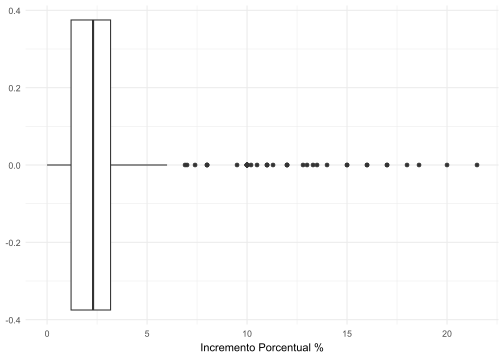
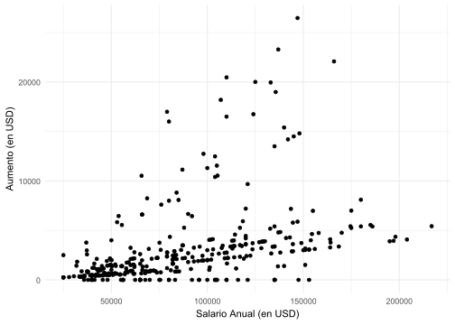
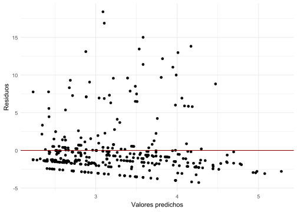
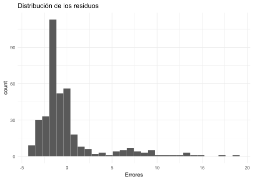
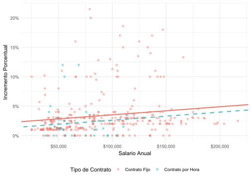

# El paquete estrella!
library(tidyverse)
# El paquete broom es para visualizar la regresión de mejor manera
library(broom)
# Cargamos el archivo ".csv"
blizzard_salary <- read.csv("blizzard_salary.csv")Analítica de los Negocios
Parcial II - Soluciones
Preliminares
El primer paso es cargar los paquetes que usaremos y los datos:
Pregunta 1
ggplot(blizzard_salary) +
geom_boxplot(aes(x=incr_porcentual)) +
labs(x="Incremento Porcentual %") +
theme_minimal()
Cualquiera de los siguientes puntos es válido:
Hay presencia de datos atípicos, con aumentos mayores al 5%. Estos outliers sesgan la distribución a la derecha.
La mediana esta alrededor de 2.5%
El Rango Intercuartílico es pequeño por lo que hay poca variabilidad
Pregunta 2
# A tibble: 2 x 3
tipo_contrato salario_anual_promedio salario_anual_mediana
<chr> <dbl> <dbl>
1 Contrato Fijo 90472. 83381
2 Contrato por Hora 63003. _____El código para obtener la salida es:
blizzard_salary |>
group_by(tipo_contrato) |>
summarise(salario_anual_promedio=mean(salario_anual),
salario_anual_mediana=median(salario_anual))# A tibble: 2 × 3
tipo_contrato salario_anual_promedio salario_anual_mediana
<chr> <dbl> <dbl>
1 Contrato Fijo 90472. 83381
2 Contrato por Hora 63003. 54246.¿Cuál de los siguientes valores es el mejor estimado para el número faltante?
El valor más cercano a 54,246 es:
- 50,000
Pregunta 3
El código para resolver esta pregunta es:
blizzard_salary |>
group_by(rating_performance) |>
summarise(salario_anual_sd=sd(salario_anual))# A tibble: 5 × 2
rating_performance salario_anual_sd
<fct> <dbl>
1 Bueno 43961.
2 Malo 30331.
3 Normal 40137.
4 Excelente 38569.
5 <NA> 34678.¿Cuál de las distribuciones de salario anual tiene una desviación estándar mayor?
- Trabajadores con nivel bueno en su performance
Las razones pueden ser:
Los trabajadores con buen desempeño pueden recibir bonificaciones, ascensos o aumentos salariales personalizados.
Los trabajadores con bajo desempeño suelen estar estancados en el mismo nivel salarial (sin aumentos ni bonos).
Pueden haber más razones. La idea era que pensaran en el contexto.
Pregunta 4
Creen una nueva variable aumento que sea el incremento en el salario que tendrían los trabajadores luego de 2020 (Se multiplicaría el salario anual por(incr_porcentual/100)). Uno de sus colegas le pide graficar la dispersión entre las variables aumento y salario_anual. ¿Cuál sería su conclusión sobre la relación entre el salario base y el incremento basándose en la gráfica?
blizzard_salary <- blizzard_salary |>
mutate(aumento=salario_anual*(incr_porcentual/100))
ggplot(blizzard_salary, aes(x=salario_anual, y=aumento))+
geom_point()+
labs(
y = "Aumento (en USD)",
x = "Salario Anual (en USD)"
) +
theme_minimal()
La gráfica sugiere que el aumento está positivamente relacionado con el nivel de salario anual. Resultado que se corrobora con los resultados de la regresión en el punto 5.
Pregunta 5
Estimemos la regresión en R:
\[\widehat{\text{Incremento Porcentual}}=\hat{\beta_0}+\hat{\beta_1}\times \text{Salario Anual}\]
aumento_1 <- lm(incr_porcentual ~ salario_anual, data= blizzard_salary)
tidy(aumento_1)# A tibble: 2 × 5
term estimate std.error statistic p.value
<chr> <dbl> <dbl> <dbl> <dbl>
1 (Intercept) 1.83 0.437 4.19 0.0000347
2 salario_anual 0.0000159 0.00000457 3.48 0.000571 Como es un modelo en niveles, la interpretación sería: un aumento de 1 dólar en el salario anual, está asociado a un aumento promedio de 0.0000159%.
Las opciones describen es un aumento de 1000 dólares, por lo tanto, se multiplica el coeficiente por 1000.
Un aumento de mil dórates, estaría asociado a un incremento promedio de (0.0000159*1000)= 0.0159% en el incremento porcentual.
¿Cual de las siguientes interpretaciones es la mejor para el coeficiente de la pendiente?
- Por cada $1,000 de salario anual, el modelo predice que el aumento salarial será mayor por 0.0159% en promedio.
Pregunta 6
La prueba de hipótesis es:
\[H_0: \beta_1=0\]
\[H_0: \beta_1\neq0\]
tidy(aumento_1)# A tibble: 2 × 5
term estimate std.error statistic p.value
<chr> <dbl> <dbl> <dbl> <dbl>
1 (Intercept) 1.83 0.437 4.19 0.0000347
2 salario_anual 0.0000159 0.00000457 3.48 0.000571 Con esta salida había dos maneras de realizar la prueba de hipótesis.
- Al 5%, el \(t^*=1.96\). Para el coeficiente \(\hat{\beta_1}\), el t es \(t=3.48\). Entonces
\[t=3.48>1.96=t^*\]
Por lo tanto, rechazo \(H_0\).
- La otra manera era usando el p-value. El p-value de acuerdo a la tabla es 0.000571. Como la prueba es al 5%:
\[p=0.000571<0.05\] Usando este criterio, también rechazo \(H_0\).
Pregunta 7
augment(aumento_1) %>%
ggplot(aes(x = .fitted, y = .resid)) +
geom_point() +
geom_hline(yintercept=0, color ="darkred") +
labs(x = "Valores predichos", y = "Residuos") +
theme_minimal()
Al ver la gráfica de arriba no vemos ningún patrón en los errores y la varianza (salvo para las observaciones después de 4.5 en los valores predichos) parece constante. En este punto no voy a ser tan estricto con la explicación siempre y cuando haya cierta coherencia en la respuesta.
La gráfica de la distribución de los errores evidencia un sesgo a la derecha. Así, ambas gráficas nos están sugiriendo que hay valores atípicos (outliers) hacia la derecha. En todo caso, si la respuesta es medianamante coherente no importa si dijeron que era normal o no.
augment(aumento_1) %>%
ggplot(aes(x = .resid)) +
geom_histogram() +
labs(title = "Distribución de los residuos",
x = "Errores") +
theme_minimal()
Pregunta 8
Para estimar los modelos, creo primero las variables dummy:
blizzard_salary <- blizzard_salary |>
mutate(contrato_fijo=ifelse(tipo_contrato == "Contrato Fijo", 1, 0),
malo=ifelse(rating_performance == "Malo", 1, 0),
normal=ifelse(rating_performance == "Normal", 1, 0),
excelente=ifelse(rating_performance == "Excelente", 1, 0))Ahora sí estimo ambos modelos:
modelo_1 <- lm(incr_porcentual ~ salario_anual + contrato_fijo,
data= blizzard_salary)
modelo_2 <- lm(incr_porcentual ~ salario_anual + malo + normal + excelente,
data= blizzard_salary)El criterio para elegir cuál modelo es mejor (por ahora) es el \(R^2\):
glance(modelo_1)# A tibble: 1 × 12
r.squared adj.r.squared sigma statistic p.value df logLik AIC BIC
<dbl> <dbl> <dbl> <dbl> <dbl> <dbl> <dbl> <dbl> <dbl>
1 0.0389 0.0337 3.56 7.43 0.000684 2 -994. 1995. 2011.
# ℹ 3 more variables: deviance <dbl>, df.residual <int>, nobs <int>glance(modelo_2)# A tibble: 1 × 12
r.squared adj.r.squared sigma statistic p.value df logLik AIC BIC
<dbl> <dbl> <dbl> <dbl> <dbl> <dbl> <dbl> <dbl> <dbl>
1 0.251 0.240 3.10 23.6 7.42e-17 4 -729. 1471. 1493.
# ℹ 3 more variables: deviance <dbl>, df.residual <int>, nobs <int>Mientras que el modelo_2 explica el 25% de la variación en el incremento porcentual, el modelo_1 explica solo el 4%. Bajo este criterio, el modelo_2 es mejor prediciendo la variable dependiente.
Pregunta 9
# A tibble: 5 × 5
term estimate std.error statistic p.value
<chr> <dbl> <dbl> <dbl> <dbl>
1 (Intercept) 3.52 0.515 6.84 5.01e-11
2 salario_anual 0.0000102 0.00000443 2.30 2.20e- 2
3 rating_performanceMalo -4.07 1.42 -2.86 4.55e- 3
4 rating_performanceNormal -2.40 0.397 -6.03 5.12e- 9
5 rating_performanceExcelente 2.99 0.714 4.19 3.77e- 5Cuando uno de sus colegas ve el resultado de la estimación, comenta: ‘El coeficiente para nivel_performanceNormal es negativo, ¡qué raro! Supongo que significa que las personas con desempeño Normal reciben un aumento menor.’ ¿Es correcto su comentario? Si no lo es, expliquen por qué.
Respuesta:
Uno debería decirle al colega que esa interpretación no es totalmente correcta. Según la estimación, alguien con un desempeño Normal no tiene menos incremento en el salario sino que el incremento es menor, en promedio, que el incremento de la categoría referencia, que en este caso, son los trabajadores con desempeño Bueno.
Pregunta 10
El modelo que se está estimando es:
\[\widehat{\text{Incremento Porcentual}}=\hat{\beta_0}+\hat{\beta_1}\times \text{Salario Anual}+\hat{\beta_2} \times \text{Contrato por Hora}\] Los coeficientes estimados son:
# A tibble: 3 × 5
term estimate std.error statistic p.value
<chr> <dbl> <dbl> <dbl> <dbl>
1 (Intercept) 2.12 0.470 4.51 0.00000855
2 salario_anual 0.0000141 0.00000470 2.99 0.00294
3 tipo_contratoContrato por Hora -0.900 0.544 -1.65 0.0993 ¿Cuál de las siguientes gráficas explica el modelo estimado? Explique su respuesta.
El intercepto para las observaciones de los trabajadores con Contrato Fijo es \(\hat{\beta_0}\) porque \(\text{Contrato por Hora}=0\). La recta para este grupo es:
\[\widehat{\text{Incremento Porcentual}} = {\color{#E87d72} \hat{\beta_0}} + \hat{\beta_1} \times \text{Salario Anual}\]
El intercepto para las observaciones de los trabajadores con Contrato por Hora es \(\hat{\beta_0}+\hat{\beta_2}\) porque \(\text{Contrato por Hora}=1\). La recta para este grupo es:
\[ \widehat{\text{Incremento Porcentual}} = {\color{#56bcc2} \hat{\beta_0}} + \hat{\beta_1} \times \text{Salario Anual} + {\color{#56bcc2} \hat{\beta_2}} \]
En este caso, \(\hat{\beta_2} = -0,9 < 0\), por lo que el intercepto para los trabajadores con Contrato por Hora es más bajo. Como la pendiente no cambia, ambas líneas deben ser paralelas. Por todo esto, la gráfica que representa la regresión es la Opción 4:
